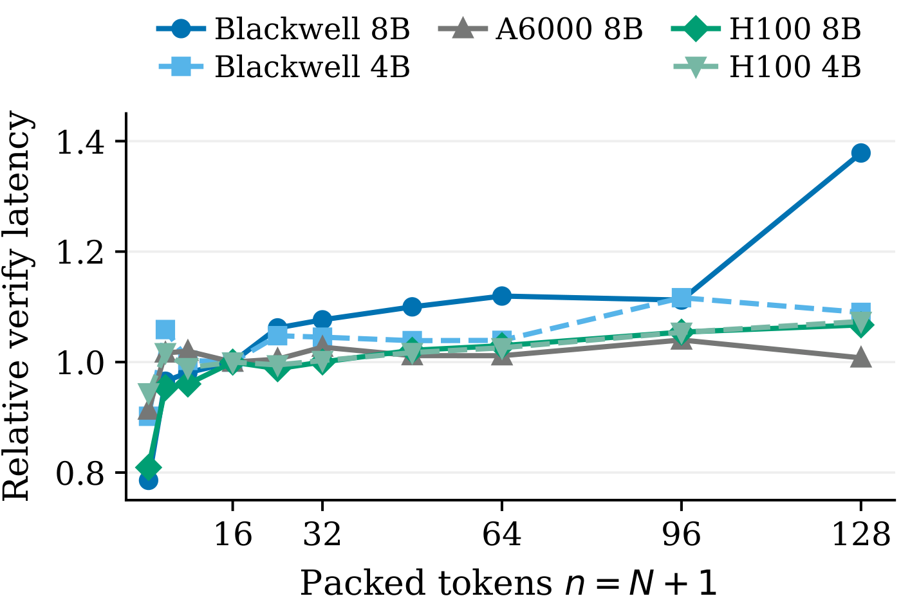

CAST: Cost-Aware Speculative Trees from One-Pass Block Drafters
arXiv preprint
1Korea University 2Yonsei University Mirae Campus
†Corresponding author
![Three panels that start from one block drafter pass after a prefix ending in how. (a) Standard decoding verifies the top-1 chain far, he, is, from, home, at, the, end under a causal mask, while lower-ranked candidates such as John, home and away stay unverified. The target model accepts far, rejects he, supplies its own token John and commits R = 2. (b) CAST verifies a tree that adds the branches John, is, from, home, at under far and home, home, at under is, under an ancestor mask. The target accepts far, John, is, from, home, supplies at and commits R = 6. (c) Width rule. The inequality ρ(N+1) ≥ (g(N) + 1) / ℓ(N) · c1 sits next to a bar chart of prefix mass against rank with a dashed line for N after rank 15, and a small table in which widths 3, 7, 15 and 31 pack 4, 8, 16 and 32 tokens and commit 2, 3, 6 and 10, with width 15 highlighted.](assets/tree.webp)
PromptWrite a solution to the following problem and make sure that it passes the tests: ```python from typing import List def mean_absolute_deviation(numbers: List[float]) -> float: """ For a given list of input numbers, calculate Mean Absolute Deviation around the mean of this dataset. Mean Absolute Deviation is the average absolute difference between each element and a centerpoint (mean in this case): MAD = average | x - x_mean | >>> mean_absolute_deviation([1.0, 2.0, 3.0, 4.0]) 1.0 """ ```
-
CAST (\(N^\ast{=}127\)) 7.9×over AR256 / 256 tokens0.93 s
-
DFlash (16) 5.5×over AR174 / 256 tokens0.93 s
-
EAGLE-3 (60) 3.3×over AR87 / 256 tokens0.93 s
-
AR autoregressive 1×baseline33 / 256 tokens0.93 s
Qwen3-8B on one H100
Abstract
Speculative decoding accelerates large language model inference by drafting future tokens cheaply and verifying them with the target model in parallel. Block drafters score a whole block of future tokens in one forward pass, yet standard decoding verifies only the top-scoring chain and discards the other candidates. Because these candidates are already scored, verifying more of them adds target computation but no extra drafting. We introduce CAST (Cost-Aware Speculative Trees), which packs these candidates into a tree and verifies it in a single target pass, leaving the target model, drafter weights, and decoding rule untouched. To decide how wide the tree should be, CAST adds candidates while the expected gain from the next one outweighs the verification time it adds. The width therefore adapts to each deployment from a latency measurement, without sweeping over widths. We evaluate CAST across five domains on three GPU generations and two model families. At its predicted width, CAST is faster than the standard chain in all eight settings, by up to 43%. We also find that the best width depends strongly on the deployment. Where verification cost jumps at a kernel boundary, a 128-token tree is only 2% faster than the standard chain, whereas the tree at the predicted width is 20% faster. Furthermore, we prove that CAST leaves the target output distribution unchanged under both greedy and sampled decoding. Code is available at https://
Method
A block drafter such as DFlash returns, in one forward pass, a probability distribution over the vocabulary for every position of a future block. Standard decoding keeps the most likely token at each position and verifies the resulting chain. CAST instead runs the unchanged drafter once, scores candidate sequences by the product of the drafter's probabilities along each sequence, and keeps the highest-scoring sequences as a tree for the target to verify in one pass. Theorem 1 of the paper says which nodes to include once the width \(N\) is fixed, and the cost slope determines how large \(N\) should be.
-
Theorem 1
Budget-optimal tree: keep the highest-scoring candidates
Given the cache-backed prefix \(x\) and the pending root \(b\), the token committed by the previous round, the drafter returns a distribution \(q_j(\cdot \mid x, b)\) for each future position \(j \le L\). CAST ranks a candidate sequence \(y_{1:d}\) by the plug-in score
\[\hat\pi(y_{1:d} \mid x, b) = \prod_{j \le d} q_j(y_j \mid x, b)\]
This product serves only to rank candidates and does not assume that the target distribution factorizes over positions. A candidate tree is prefix-closed, meaning that it contains every ancestor of each of its nodes, and its budget \(N\) counts its nonroot nodes. Keeping the \(N\) highest-scoring candidates maximizes the expected number of accepted tokens under the drafter's scores for any \(N\), and this set is itself prefix-closed.
The public decoder keeps the top \(K = 8\) tokens at each future position and expands the tree best-first, a rank cap that matches the full-rank tree's accepted length to within 1.1% at the evaluated budgets. The tree is optimal only among the candidates this cap retains, and only for the plug-in score.
-
Theorem 2
Cost-aware width: add candidates while they pay off
Verifying a budget-\(N\) tree packs \(N + 1\) tokens, the pending root included, into one target pass. One drafter pass has already scored every candidate, so a wider tree adds verification work but no drafting work. When the round time \(\ell(N)\) is locally affine in \(N\) with nonnegative slope \(c_1\), throughput \((g(N) + 1) / \ell(N)\) is unimodal, and adding node \(N + 1\) does not reduce it if and only if
\[\rho_{(N+1)} \;\ge\; \frac{g(N) + 1}{\ell(N)} \cdot c_1\]
Here \(\rho_{(N+1)}\) is the prefix mass of the next node, \(g(N)\) is the expected accepted length of the optimal budget-\(N\) tree, the fraction is the throughput in tokens per millisecond, and \(c_1\) is the cost of one more node in milliseconds. Because this test needs only the drafter's scores and a short latency measurement, the width adapts to each deployment without a sweep.
The experiments set \(c_1\) to the slope of the target-forward latency, fit to probe measurements. This probe omits the packing, mask, heap, and KV-gather overhead, so the choice under-estimates \(c_1\), and the width sweeps bound the resulting error.
The packed tree is verified in one target pass under an attention mask through which each node sees only the prefix and its own ancestors, which reproduces exactly what \(N + 1\) separate autoregressive forward passes would compute. Under greedy decoding, the round commits the longest tree path that agrees with the target and appends the target's next token, which becomes the new pending root. For temperature \(T > 0\), CAST runs a proposal-aware stochastic tree verifier, and by Theorem 3 of the paper its committed tokens follow the distribution of autoregressive sampling from the target at temperature \(T\).
In fp32, CAST and standard DFlash both reproduce autoregressive decoding token for token on Qwen3-8B and Qwen3-4B. In bf16, both depart from autoregressive decoding only at near-ties of the top two target logits, where shape-dependent rounding can flip the greedy token.
The Cost of Width
Adding a candidate node can raise the committed round length \(R\) but adds selection, heap, mask, packing, target-forward, and KV-gather work. A wider tree pays off only when the gain in \(R\) outweighs that work.
The target-forward latency grows only locally with the packed-token count \(n = N + 1\). From \(n = 16\) to \(n = 64\) it rises only +12% on Blackwell-8B and a few percent on every other GPU and target pair, then jumps at the Blackwell-8B \(n = 128\) kernel/tile boundary alone.
The stopping rule turns each curve into a width. On Blackwell (RTX PRO 6000 Server Edition) with Qwen3-8B the threshold is about 0.015, crossed between \(N = 47\) and 63, so the deployed width is \(N^\ast = 63\). The same rule selects wider trees on flatter cost curves.


Speedup at the Predicted Width
The main experiments use the public, unmodified block-16 DFlash heads for non-thinking Qwen3-4B and Qwen3-8B in bf16 at batch 1. Autoregressive (AR) decoding, DFlash, and CAST are timed in one shared decoding loop on an H100 SXM across five math, code, and chat domains, using 40 prompts in each domain and the same token budget for every method. EAGLE-3 uses its official code and public Qwen3 heads and shares the machine, prompts, decode-only timer, and AR baseline of the DFlash and CAST rows.
CAST improves on DFlash across every H100 domain for Qwen3-8B and Qwen3-4B. Both targets average 5.62× speedup over AR, with longer committed rounds throughout.
| Method | Math | Code | Chat | |||||||||
|---|---|---|---|---|---|---|---|---|---|---|---|---|
| GSM8K | MATH-500 | HumanEval | MBPP | MT-Bench | Avg. | |||||||
| Speedup | \(R\) | Speedup | \(R\) | Speedup | \(R\) | Speedup | \(R\) | Speedup | \(R\) | Speedup | \(R\) | |
| Temperature = 0, Qwen3-8B | ||||||||||||
| EAGLE-3 (16) | 2.58× | 4.45 | 2.37× | 4.11 | 2.23× | 3.97 | 2.37× | 4.11 | 2.07× | 3.74 | 2.32× | 4.08 |
| EAGLE-3 (60) | 3.08× | 5.34 | 2.79× | 4.88 | 2.69× | 4.76 | 2.80× | 4.93 | 2.41× | 4.49 | 2.75× | 4.88 |
| DFlash (16) | 4.54× | 6.23 | 5.57× | 7.81 | 4.67× | 6.52 | 4.82× | 6.56 | 2.30× | 4.06 | 4.38× | 6.24 |
| CAST (\(N^\ast{=}127\)) | 5.81× | 8.46 | 6.74× | 9.87 | 6.16× | 9.04 | 6.25× | 9.09 | 3.16× | 5.52 | 5.62× | 8.40 |
| Temperature = 0, Qwen3-4B | ||||||||||||
| EAGLE-3 (16) | 1.81× | 3.29 | 1.79× | 3.11 | 1.62× | 3.00 | 1.71× | 3.03 | 1.59× | 2.84 | 1.70× | 3.05 |
| EAGLE-3 (60) | 2.08× | 3.81 | 2.03× | 3.61 | 1.86× | 3.41 | 1.94× | 3.46 | 1.87× | 3.34 | 1.96× | 3.53 |
| DFlash (16) | 4.40× | 6.13 | 5.34× | 7.49 | 4.61× | 6.49 | 4.96× | 6.72 | 2.30× | 3.95 | 4.32× | 6.15 |
| CAST (\(N^\ast{=}127\)) | 5.79× | 8.47 | 6.62× | 9.76 | 6.04× | 9.02 | 6.34× | 9.11 | 3.29× | 5.78 | 5.62× | 8.43 |
| Temperature = 1, Qwen3-8B | ||||||||||||
| EAGLE-3 (16) | 2.22× | 4.30 | 2.32× | 3.91 | 2.19× | 3.90 | 2.22× | 3.89 | 1.82× | 3.52 | 2.15× | 3.90 |
| EAGLE-3 (60) | 2.63× | 5.17 | 2.65× | 4.62 | 2.52× | 4.57 | 2.58× | 4.66 | 2.16× | 4.29 | 2.51× | 4.66 |
| DFlash (16) | 4.11× | 5.69 | 4.39× | 6.36 | 4.08× | 5.77 | 3.83× | 5.31 | 2.15× | 3.63 | 3.71× | 5.35 |
| CAST (\(N^\ast{=}127\)) | 5.16× | 7.93 | 5.39× | 8.46 | 5.35× | 8.27 | 4.97× | 7.56 | 2.94× | 5.30 | 4.76× | 7.50 |
| Temperature = 1, Qwen3-4B | ||||||||||||
| EAGLE-3 (16) | 1.60× | 3.21 | 1.68× | 3.00 | 1.67× | 3.00 | 1.64× | 2.98 | 1.38× | 2.80 | 1.59× | 3.00 |
| EAGLE-3 (60) | 1.83× | 3.75 | 1.89× | 3.48 | 1.83× | 3.41 | 1.81× | 3.42 | 1.53× | 3.22 | 1.78× | 3.46 |
| DFlash (16) | 4.16× | 5.80 | 4.54× | 6.55 | 4.27× | 5.96 | 4.29× | 5.96 | 2.21× | 3.79 | 3.90× | 5.61 |
| CAST (\(N^\ast{=}127\)) | 5.14× | 7.88 | 5.56× | 8.69 | 5.54× | 8.59 | 5.41× | 8.27 | 3.02× | 5.44 | 4.93× | 7.77 |
Scroll sideways to see every column.
Qwen3 decoding on H100 SXM. Cells report speedup over AR and committed round length \(R\). Parentheses give baseline packed tokens or the CAST nonroot budget.
The \(T = 1\) blocks keep the same rule-predicted width and replace greedy verification by the proposal-aware stochastic verifier. Sampling shortens the committed rounds of DFlash and CAST, yet the gain of CAST over DFlash stays between +22% and +37% in every domain on both targets.
The same cost rule selects \(N^\ast = 127\) for the block-10 head of LLaMA-3.1-8B, extending the benefit to a second target family and block size. There, CAST at the predicted width averages 3.87× over AR, against 2.59× for the official EAGLE-3 with a 60-token tree.
Speedups and gains are computed from decode-only steady-state time. The claim is a controlled comparison that changes only the decoder within each setting, not a cross-system ranking.
Width Across Hardware
The rule thresholds drafter-score order statistics from 1,500 offline GSM8K rounds, using one curve across deployments and changing only the measured cost slope. Width selection uses scores and costs, not timing-sweep outcomes. Across all eight settings, the predicted gain is within 1.7 percentage points of the sweep oracle, and the predicted width matches the best swept width in six settings. The sweeps use \(N\in\{15,31,47,63,95,127\}\). Among them, the H100 SXM Qwen3-8B and Qwen3-4B sweeps start at \(N{=}47\), and the A6000 sweeps end at \(N{=}95\). The settings cover three GPUs, two model families, two block sizes, and a 30B sparse mixture-of-experts target.
| Setting (drafter block) | \(N^\ast\) | Gain at \(N^\ast\) | Oracle width (gain) | Gap | Gain at \(N{=}127\) | |
|---|---|---|---|---|---|---|
| H100 SXM, Qwen3-8B (b16) | 127 | +29.5% | 127 | +29.5% | +0.0 | +29.5% |
| H100 SXM, Qwen3-4B (b16) | 127 | +31.5% | 127 | +31.5% | +0.0 | +31.5% |
| Blackwell, Qwen3-8B (b16) | 63 | +19.8% | 95 | +21.5% | −1.7 | +2.4% |
| Blackwell, Qwen3-4B (b16) | 95 | +27.3% | 127 | +29.0% | −1.7 | +29.0% |
| A6000, Qwen3-8B (b16) | 95 | +28.7% | 95 | +28.7% | +0.0 | +25.1%\(^\ddagger\) |
| A6000, Qwen3-4B (b16) | 95 | +32.6% | 95 | +32.6% | +0.0 | +31.7%\(^\ddagger\) |
| H100 SXM, LLaMA-3.1-8B (b10) | 127 | +27.4% | 127 | +27.4% | +0.0 | +27.4% |
| H100 SXM, Qwen3-Coder-30B-A3B (b16) | 127 | +35.6% | 127 | +35.6% | +0.0 | +35.6% |
Scroll sideways to see every column.
Predicted and sweep-oracle widths across the eight settings. Gain over DFlash is averaged over domains. Gap is in percentage points. \(\ddagger\) marks cells measured on a second A6000 host.
CAST is faster than the standard DFlash chain in all eight hardware and model settings, with average gains of 20–36% and up to 43% on a single domain.
The best width depends strongly on the deployment. The Blackwell-8B cost cliff erodes most of the gain at the largest width. Gains plateau at \(N = 63\)–95 and fall at 127. Where verification cost jumps at a kernel boundary, a 128-token tree is only 2.4% faster than the standard chain, whereas the tree at the predicted width is 19.8% faster. Flatter A6000 and Blackwell-4B curves support wider trees.
Candidate Scores and Tree Shape
The diagnostics below replay Qwen3-8B greedy decoding offline on the same 40-prompt slices as the main rows. At the first chain rejection, the target correction lies at draft ranks 2–4 in 56–77% of events. Depth-one reliability and the falling prefix masses explain the ranking and stopping rule.
![Three panels for GSM8K, MT-Bench, and HumanEval. Panel a, correction rank: stacked bars of the rank of the target correction among first rejections, where ranks 2 to 4 cover about 77 percent on GSM8K and HumanEval and about 56 percent on MT-Bench, followed by ranks 5 to 8, 9 to 16, 17 to 32, and above 32. Panel b, depth-one reliability: target-hit rate against drafter probability, with the points of all three domains close to the diagonal. Panel c, stopping values: sorted candidate prefix masses on a log scale against candidate index up to about 100, falling from near 1 to below 0.01, with a dashed line at the Blackwell GSM8K threshold near 0.015 that the GSM8K and HumanEval curves cross around index 48.](assets/scores.webp)
In this replay at a fixed budget of 47 nonroot nodes, neither a fixed branching schedule nor uniform binary branching commits longer rounds than the 15-node chain in any domain, whereas the top-\(N\) tree does in every domain. On GSM8K its committed round length reaches 7.7 against 6.3 for the chain.
At 16 packed tokens, CAST keeps \(N = 15\) nonroot nodes from the same block-16 drafter as DFlash, so the two decoders differ only in tree shape. This shape alone makes CAST 5.9 to 29.2% faster than DFlash in all twelve Blackwell and A6000 cells. In offline replay, the tree also lengthens accepted rounds for a second one-pass drafter.
Serving Under Load
No single static width serves the load range. The drafter forward is width-independent, one pass serving all \(B\) requests, while the verifier width tax grows from +10% at \(B = 1\) to +237% at \(B = 32\). In the batched harness, the best static width is therefore a fixed wide tree up to \(B = 8\) and the plain chain from \(B = 16\).
![Three line plots of Qwen3-8B verification latency in milliseconds. Panel a, Blackwell width cost: verifier latency against packed verifier width from 1 to 64, nearly flat near 21 at batch 1, rising from about 25 to 45 at batch 8 and from about 43 to 145 at batch 32. Panel b, H100 SXM cost probe: batch latency against packed tokens per request up to 128, flat near 30 at batch 1, rising to about 100 at batch 8 and to about 390 at batch 32. Panel c, Blackwell cost probe: batch latency against packed tokens per request for batches 1, 2, 4, 8, and 16, where batches 1 and 2 stay near 30, batch 4 reaches about 45, batch 8 about 80, and batch 16 about 150 at 128 packed tokens.](assets/serving.webp)
Global best-first allocation instead splits one shared budget across requests. In offline replay of 32-request batches whose budget averages four nodes for each request, it raises total accepted tokens over a uniform split by 16.8 to 22.5%. Measured on Blackwell with Qwen3-8B and a ragged verifier kernel, it lifts goodput over the best static width by a median 7.0% at \(B = 16\) and 13.7% at \(B = 32\) across four runs.
BibTeX
@misc{lee2026cast,
title = {CAST: Cost-Aware Speculative Trees from One-Pass Block Drafters},
author = {Jungseob Lee and Sugyeong Eo},
year = {2026},
journal = {arXiv preprint},
eprint = {2610.00321},
archivePrefix = {arXiv},
url = {https://arxiv.org/abs/2610.00321},
}